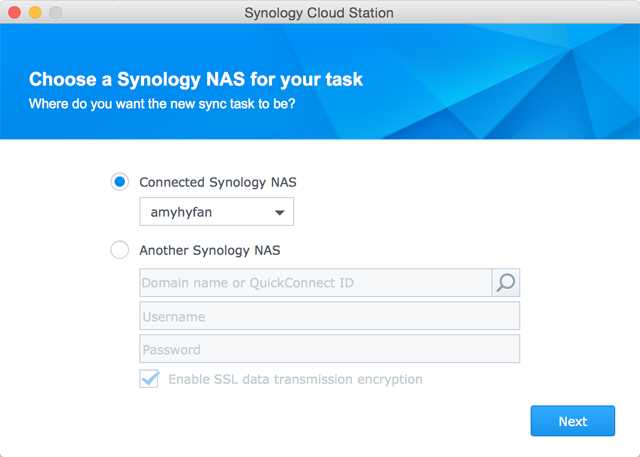
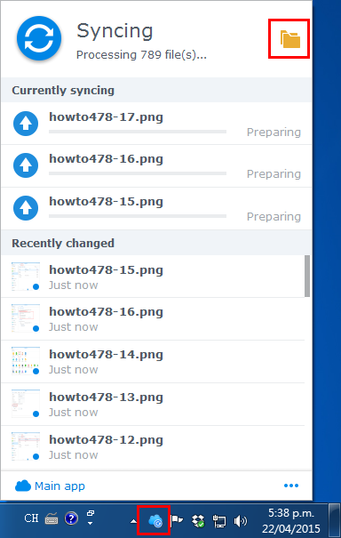

Visão geral
O Cloud Station não é apenas um sofisticado software de sincronização multiplataforma, os usuários também podem usá-lo como uma maneira mais inteligente de fazer backup de seus computadores pessoais. Esses são alguns benefícios de usar o Cloud Station como auxiliar de backup. Em primeiro lugar, a replicação em tempo real fornece um RPO melhor, um período mais curto em que os dados podem se perder (irrecuperáveis) de seu PC devido a um grande incidente. Ele não apenas é instantâneo como também o ajudará a economizar largura de banda drasticamente em comparação com o backup tradicional que usa grandes quantidades de largura de banda em um determinado momento. Você pode filtrar facilmente os arquivos dentro da mesma pasta que você não quer fazer backup, configurando o tamanho ou o tipo do arquivo em seu cliente PC. O Cloud Station também pode manter até 32 versões de histórico de um único arquivo que o Cloud Station permite que você restaure a um cliente PC do lado do servidor (NAS).
1. Configuração do Cloud Station no Synology NAS
- Entre no DSM usando uma conta pertencente ao administrator.
- Abra o Cloud Station.
- Se você não habilitou o recurso de página de início do usuário, o sistema pedirá que você o faça. Clique em OK.
- Você será redirecionado para a página de configurações do usuário. Habilite as páginas iniciais do usuário e clique em Aplicar.
- Agora volte para o Cloud Station e o sistema solicitará para habilitá-lo. Clique em Sim.
- Vá para Privilégios e especifique quais usuários poderão usar o Cloud Station. Clique em Salvar.
- Configure uma pasta compartilhada em seu Synology NAS para fins de backup. Para fazer isso, vá para Painel de controle > Pasta compartilhada e clique em Criar.
- Nomeie sua pasta e preencha os detalhes da forma correspondente. Clique em OK. Por exemplo, nós nomearemos a pasta como Backup.
- Na guia Permissões, especifique quais usuários poderão acessar a pasta. Por exemplo, nós daremos ao admin permissões de leitura/gravação para a pasta. Clique em OK.
- Vá para Cloud Station > Configurações > Compartilhamento e selecione a pasta Backup e clique em Habilitar.


2. Configuração do Cloud Station em seu PC Windows
Siga as etapas para configurar o Cloud Station em seu Mac ou PC
2.1 Para PC
- Vá para Cloud Station > Visão geral e clique no botão Download.
- Clique no botão para baixar o Cloud Station para PC Windows. (Você também pode baixar o Cloud Station de Centro de Download Synology.)
- Inicie o instalador em seu computador e siga as instruções para instalar o Cloud Station.
- Após a instalação, execute o Cloud Station em seu computador. Clique em Iniciar Agora.
- Digite o endereço do Synology NAS executando o Cloud Station (ou QuickConnect ID), nome de usuário e senha. (Você também pode clicar no ícone à direita e o Cloud Station pesquisará automaticamente outro Synology NAS dentro de sua LAN). Clique em Avançar.
- Selecione como deseja configurar sua tarefa (aqui nós selecionaremos Configuração avançada pois estamos configurando uma pasta especificamente para backup). Clique em Avançar.
- Selecione uma pasta no seu computador para manter sincronizada com a pasta Backup que você criou anteriormente em seu Synology NAS. Clique em Avançar.
- Clique em Concluído para completar a configuração.


Para criar outra tarefa:
- Vá para Cloud Station > Configurações e habilite uma pasta compartilhada para essa nova tarefa. Meu exemplo é foto. Certifique-se de ter privilégios de leitura/gravação para foto.
- De volta ao Cloud Station em seu PC, clique em Criar.
- Selecione um Synology NAS para sua nova tarefa Aqui selecionaremos Synology NAS conectado pois estamos criando outra tarefa para o mesmo Synology NAS. Clique em Avançar.
- Clique em Configuração avançada e siga o restante do assistente para continuar a configuração.


2.2 Para Mac
- Vá para Cloud Station > Visão geral e clique no botão Download.
- Clique no botão para baixar o Cloud Station para Mac. (Você também pode baixar o Cloud Station de Centro de Download Synology.)
- Inicie o instalador em seu computador e siga as instruções para instalar o Cloud Station.
- Após a instalação, execute o Cloud Station em seu computador. Clique em Iniciar Agora.
- Digite o endereço do Synology NAS executando o Cloud Station (ou QuickConnect ID), nome de usuário e senha. (Você também pode clicar no ícone à direita e o Cloud Station pesquisará automaticamente outro Synology NAS dentro de sua LAN). Clique em Avançar.
- Selecione como deseja configurar sua tarefa (aqui nós selecionaremos Configuração avançada pois estamos configurando uma pasta especificamente para backup). Clique em Avançar.
- Selecione uma pasta no seu computador para manter sincronizada com a pasta Backup que você criou anteriormente em seu Synology NAS. Clique em Avançar.
- Clique em Concluído para completar a configuração.


Para criar uma nova tarefa:
- Vá para Cloud Station > Configurações e habilite uma pasta compartilhada para essa nova tarefa. Meu exemplo é foto. Certifique-se de ter privilégios de leitura/gravação para foto.
- De volta ao Cloud Station em seu computador, clique em Criar.
- Selecione um Synology NAS para sua nova tarefa Aqui selecionaremos Synology NAS conectado pois estamos criando outra tarefa para o mesmo Synology NAS. Clique em Avançar. 
- Clique em Configuração avançada e siga o restante do assistente para continuar a configuração.

3. Recuperar dados do Cloud Station
Se você remover ou trocar um arquivo acidentalmente, o Cloud Station irá permitir recuperá-lo facilmente.
4.1 Baixar uma versão anterior de um arquivo sincronizado no PC
- Clique no ícone Cloud Station na bandeja do seu sistema e no ícone da pasta. 
- Clique com o botão direito no arquivo selecionado e escolha Synology Cloud Station > Procurar versões anteriores.
- Localize a versão que deseja baixar e clique no ícone de download.
- Insira o nome do arquivo e escolha o destino para salvar o arquivo.


4.1 Baixar uma versão anterior de um arquivo sincronizado no Mac
- Clique no ícone Cloud Station na bandeja do seu sistema e no ícone da pasta.
- Clique com o botão direito no arquivo selecionado e escolha Synology Cloud Station > Procurar versões anteriores.
- Localize a versão que deseja baixar e clique no ícone de download.
- Insira o nome do arquivo e escolha o destino para salvar o arquivo.


4.3 Baixar ou restaurar uma versão anterior de um arquivo sincronizado no Cloud Station
- Vá para Cloud Station > Histórico de Versões e selecione a pasta Backup criada anteriormente.
- Selecione o arquivo que deseja recuperar e clique em Ação > Procurar versões anteriores.
- Selecione a versão do arquivo que deseja baixar e clique em Download. Ou, se você tem certeza de que quer a versão selecionada restaurada, clique em Restaurar e ela substituirá a versão atual.


4. Observações importantes
- Sempre mantenha versões históricas no caso de um arquivo ser removido ou substituído por acidente.
- Em Configurações Globais, você pode configurar se um arquivo será buscado novamente em seu NAS ou excluído em seu NAS quando você excluir um arquivo do PC.
5. Maior proteção para seus dados
Para saber mais maneiras de proteger e fazer backup de seus dados, clique aqui para ver tutoriais detalhando outros serviços de backup disponíveis no DSM.